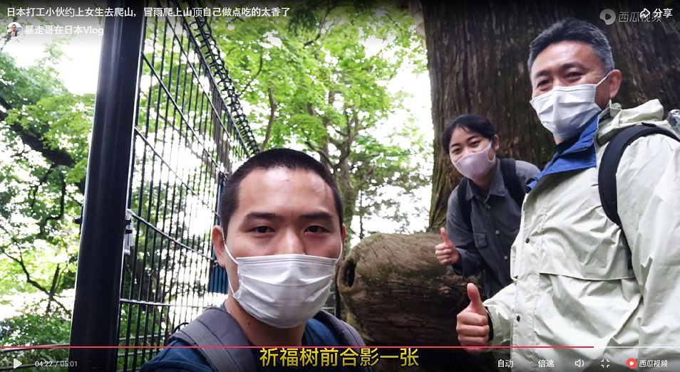
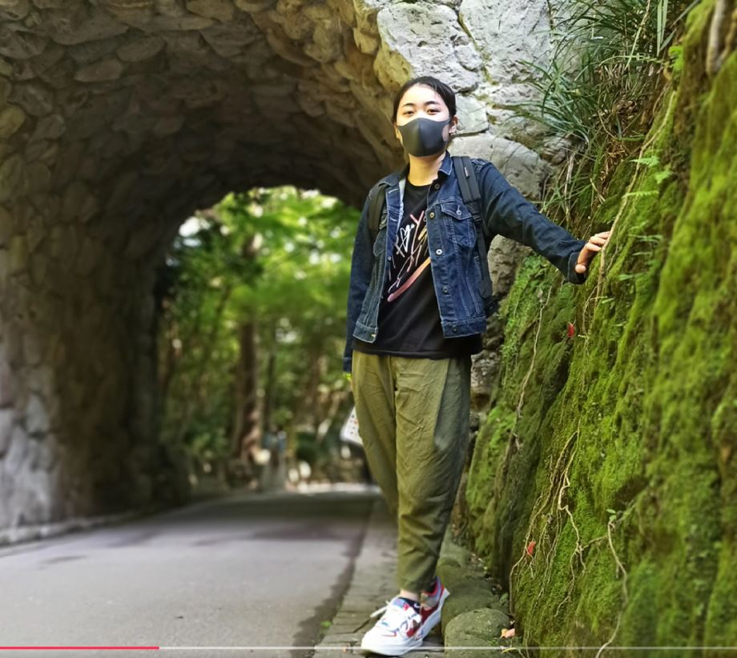
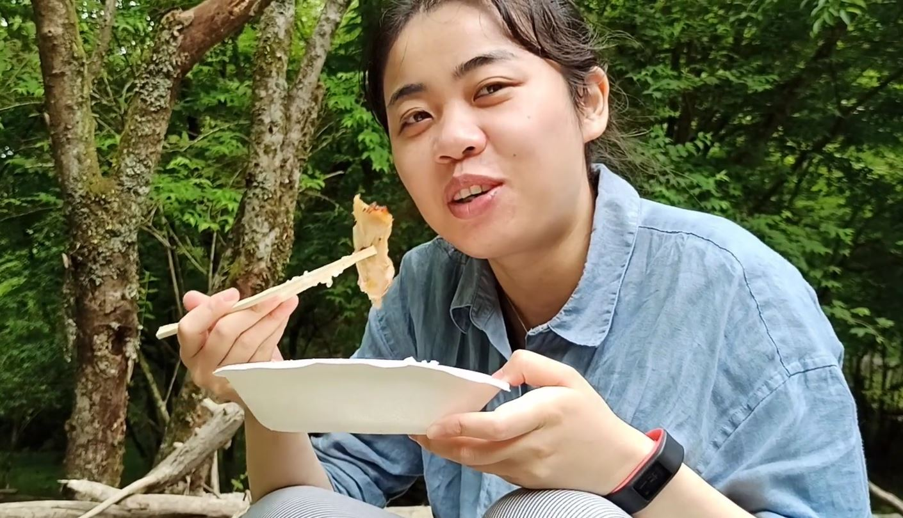

10:30 AM
缘分让我们相遇在高尾山车站.
11:00 AM
开始跟郜郜从高尾山底爬山，没想到郜郜体力还挺不错的.
13:30 PM
冒着小雨爬到山顶，给小郜郜煮泡面炸鸡翅吃.
缘分让我们相遇在高尾山车站.
开始跟郜郜从高尾山底爬山，没想到郜郜体力还挺不错的.
冒着小雨爬到山顶，给小郜郜煮泡面炸鸡翅吃.
回程跟途中偶遇的在日华人大哥-安哥一起下山，路过几百年树龄的杉树的时候，大家一起合影留恋.
第一次跟郜郜爬完山后，将爬山过程中拍摄的视频剪辑成Vlog上传到各平台后，受到不少吃瓜网友的喜欢.
今天是跟郜郜的第二次约会于镰仓-江之岛.
上午逛了逛镰仓站、镰仓大佛、镰仓文学馆.
下午沿着湘南海岸线从镰仓徒步去江之岛，沿途的风景很美，人也是.
在镰仓文学馆前的小径，第一次给小郜郜拍照.
下午买了点零食小酒，躺在镰仓站前的沙滩上吃吃喝喝，没想到郜郜的薯条还被乌鸦抢走了，晚上去江之岛上逛了一圈，吃了网红小吃-烤鱿鱼，回程的路上将这次拍摄的视频剪辑成了Vlog.
本来跟郜郜第一次约的就是锅割山，阴差阳错去了高尾山，今天继续登锅割山计划.
登锅割山途中遇到一位日本老太太说我们爬的太慢了可能到不了山顶，于是乎中途改爬山为野炊.
下午我拿出餐具为郜郜做了烤猪排，小郜郜从旁协助，用餐时受到小郜郜极力好评，两人对饮小啤酒.
看一看，吃货小郜郜一枚，认真的干饭人.
今天坐电车回程的路上，我鼓起勇气向郜郜讲了《冰山上的来客》中的"阿米尔，冲啊"这句话背后的故事，她心领神会的问道:“所以，你要试试吗". 于是我正式牵起了她的手.
小郜郜答应做我女朋友之后，想到我这个粗心男朋友还没正经请她吃过饭... 所以今天带她去池袋吃饭
其实今天本来没打算拍视频的，觉得老拍个人私事放在网上不太好.结果小郜郜说："你今天不拍视频吗？"于是我又愉快地拿起手机记录起这次约会。
今天吃的是位于池袋的麻婆唐府，算是我比较喜欢吃的，有四川菜也有东北菜，也想带郜郜来尝一尝，没想到咱俩饮食爱好还挺一致。
误入一张正在吃大盘鸡的小郜郜，我俩一致认为这个大盘鸡分量真是不是一般的足.

今天点的有点多，咱俩都没吃完，小郜郜打包带回了全场最佳的黄焖排骨，我就把剩下的烤串带回去了，又是记录美好生活的一天。